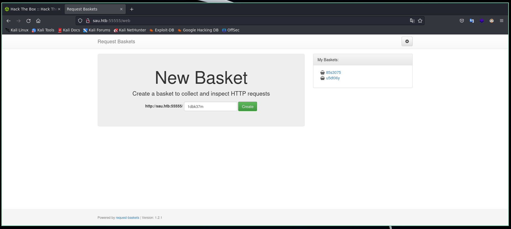
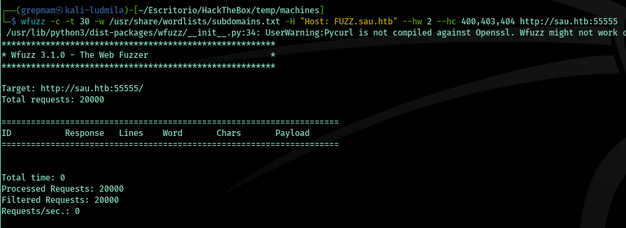
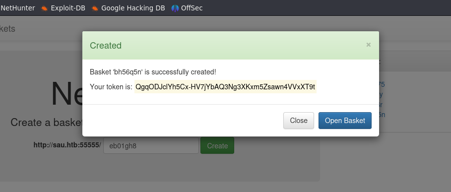
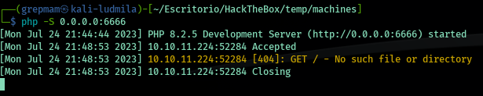
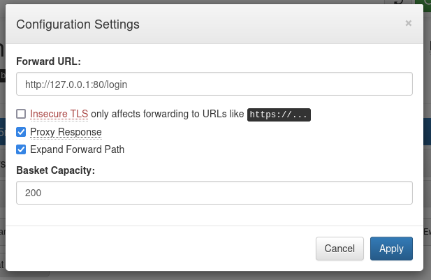
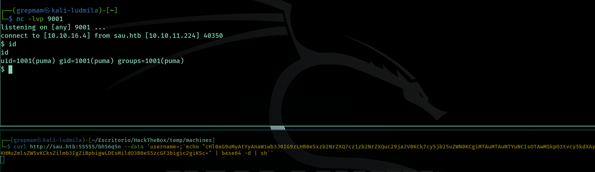
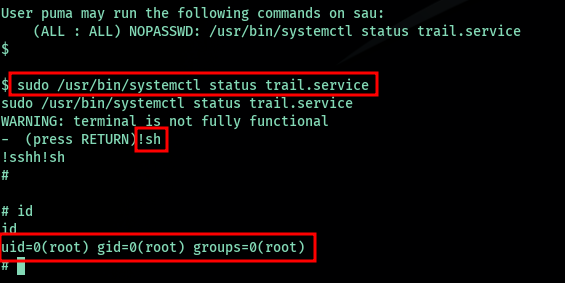

HackTheBox: Sau
Introduction
Hello everyone. Today I present my first writeup, in which we will explore a Linux machine with a series of interesting vulnerabilities. In this machine, we will face a security challenge that includes three different vulnerabilities. The first is an SSRF vulnerability. Then, we will continue with a remote command execution flaw. Finally, the last step of this journey will be a privilege escalation through SUDO on systemd. This vulnerability will allow us to obtain administrative privileges on the system and, therefore, full control over the machine.
Reconnaissance and Enumeration
I run a scan with NMAP:

We see that there are three ports, two open and one filtered. We won’t use SSH, port 80 is protected, so for now we’ll ignore it. Let’s analyze what’s on port 55555. We go to the browser and check if it’s accessible:

We are looking at a web service, let’s start enumerating it.
By googling we learn what this software is about. It’s a REST API used to analyze requests. We can create “baskets” where each one will hold the requests made to it. Let’s try to enumerate possible directories, maybe we’ll find something:

We don’t find anything beyond what we already know, let’s check if there are subdomains:

Nothing. By the way, we also have the software version, which will be useful later:

Let’s start analyzing the web functionality. We create the basket:

We access it. Here we can inspect the requests through the created URL. There are several sections, but one in particular is for server configuration:

Exploitation
Server Side Request Forgery
If we analyze each input carefully, there is a “forward URL” that, if not properly sanitized, we can take advantage of. To test, we’ll create a small server to handle the redirection:


When making the request, we observe that it works, which indicates that we found an SSRF vulnerability:


Remember that at the beginning we found port 80 and it was filtered? Well, now that we know we have this flaw, we can bypass the firewall that blocks access to it. To do this, we change the “forward URL”:

This vulnerability is known as CVE-2023-27163. With the Request-Baskets software version, a simple search will give you an exploit to automate the process.
OS Command Execution
When we make the request through the forward to port 80 of the local machine, we find a new service called Maltrail:

This software is responsible for analyzing traffic for malicious activity. Again we have the program version. Searching on Google, we find a vulnerability that involves the lack of validation on the username parameter input in the login. We modify the forward again but this time with the login:

We create a temporary server with netcat and now with CURL, we make the request sending the username parameter with the reverse shell (in Python3) encoded in base64:

Privilege Escalation
Alright, we are inside the system. But we still have this important phase left. The first thing I always try is running “sudo -l” to check if we have commands that allow us to execute with administrator permissions. So:

Bingo! We can execute “systemd” as administrator, but it’s very specific. By googling, I found a vulnerability called CVE-2023-26604. SystemD has a vulnerability in versions below 247, where the LESSSECURE variable is not set to 1, allowing us to execute commands with less:

And we are root!
~Grepmam